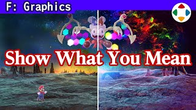
速览
做图形监修时，实际把调整后的样子给对方看是最好的。这里举几个背景类监修图的例子。这是美术交上来的命魂探索时的洞窟背景；色彩太朴素，他修图成「希望这样」的图，比较一下差别明显。Boss 魔罗克的背景，交上来的和他修图的；灯火之星的通路，用明度差和热感表现希望这样，而且因为伤眼，熔岩部分不做得太耀眼。这种调整用口头传达很难，你会怎么说明？但导演准备所有修图并不现实，时间再多也不够；不过这次举的修图都只花约 5 分钟、至少不到 10 分钟，这样就比口头传达更有效。洞窟的步骤：把图读进 Photoshop → 复制图层提高对比 → 稍微错开色相 → 在错开色相的图层受光部分用橡皮擦 → 偏紫的图层变得像反光，好看起来 → 调整色调完成。单色调的背景配上复杂的色彩，变得更好。顺带一提他不用数位板，只用鼠标；修图做得很随意，实际要美术正确地好好完成。当然最好是一开始就能交出可以 OK 的图。监修只是方向，要磨到产品级，还要靠美术之后努力。
1. 直接展示最有效 0:04
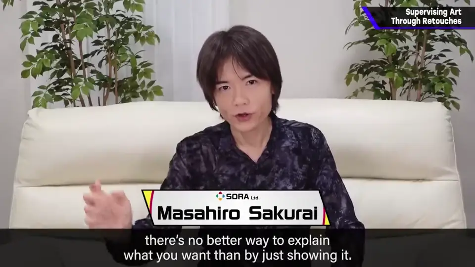
这里稍微举几个背景类监修图像的例子。
2. 修图前后对比 0:16
这是美术交上来的、命魂探索时的洞窟背景。色彩太朴素，所以他修了一张「希望这样」的图。比较一下：
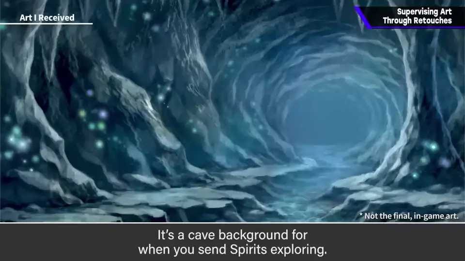
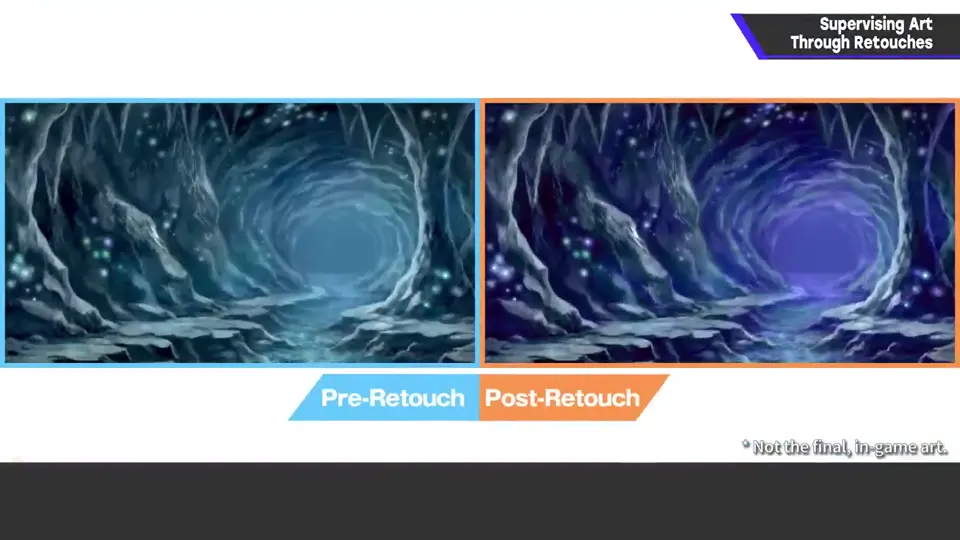
Boss 魔罗克的背景：交上来的是这样，他修成这样。
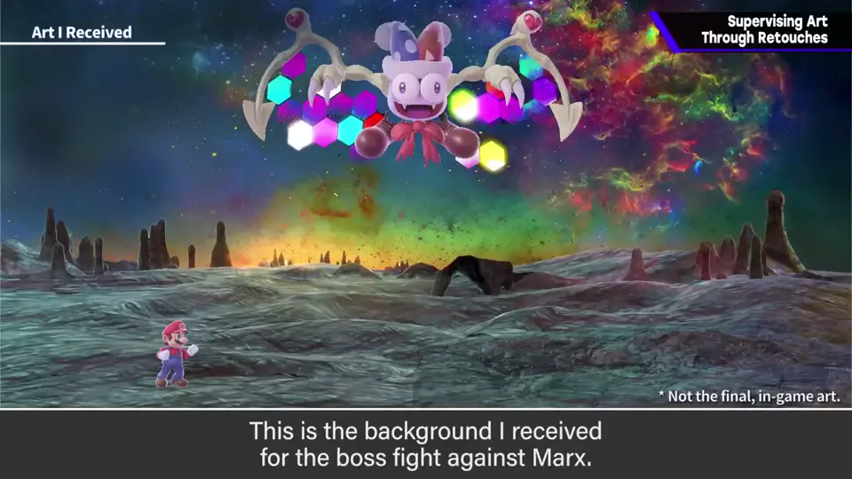
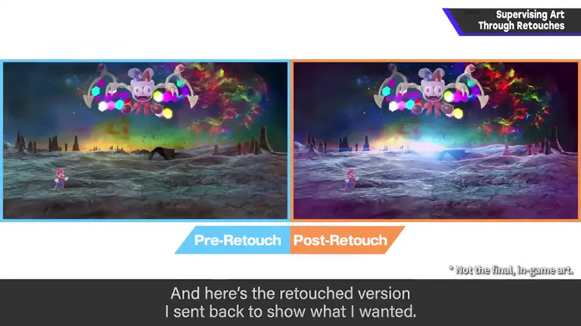
灯火之星的通路：用明度差和热感表现，希望这样。熔岩部分因为伤眼，不做得太耀眼。
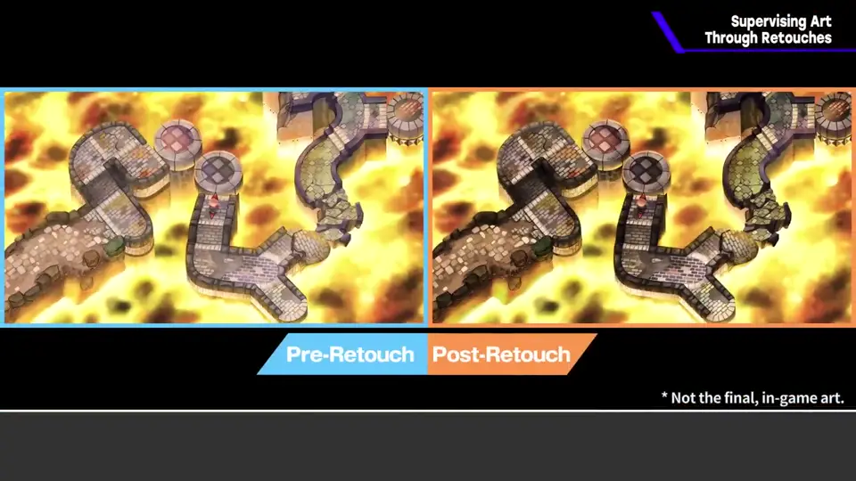
3. 口头难以传达 1:14
这种调整用口头传达很难。你觉得该怎么说明？
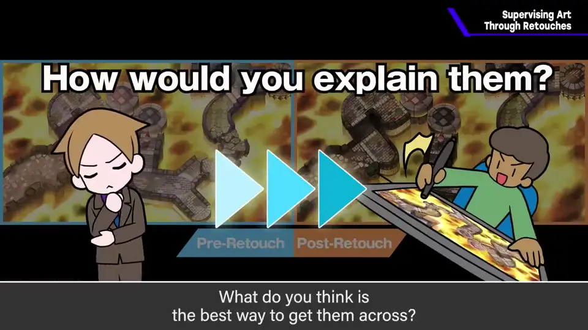
但导演把所有修图都准备好并不现实，时间多少都不够。
4. 洞窟修图步骤 1:46
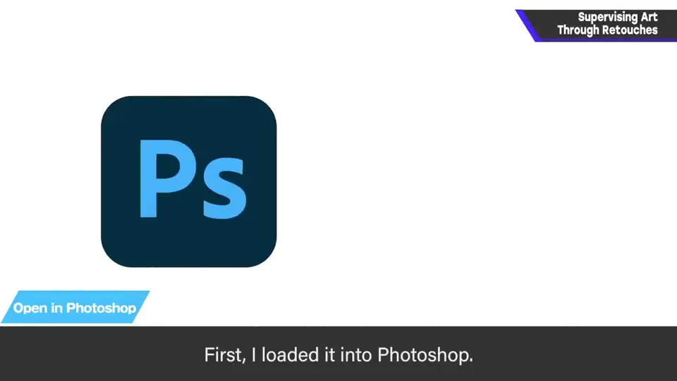
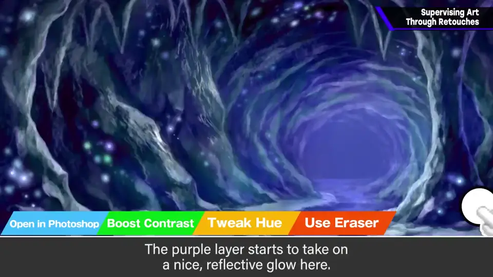
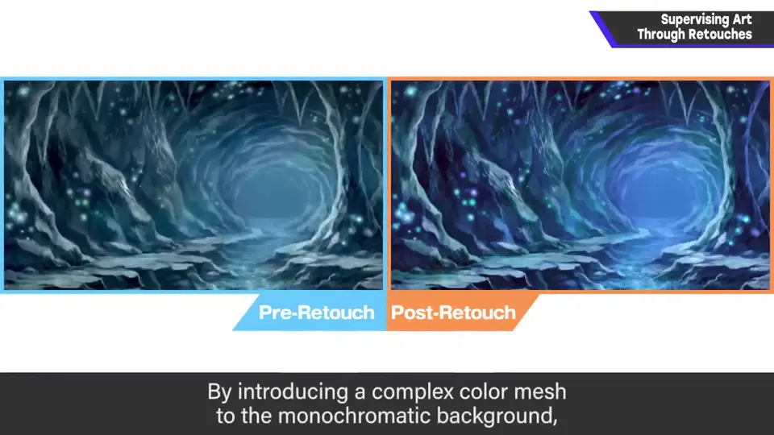
偏紫的图层像反光一样，变得漂亮起来；单色调的背景配上复杂的色彩，变得更好了。
5. 监修只是方向 2:30
顺带一提，他不用数位板，只用鼠标。修图做得很随意，实际上需要美术正确地好好完成。
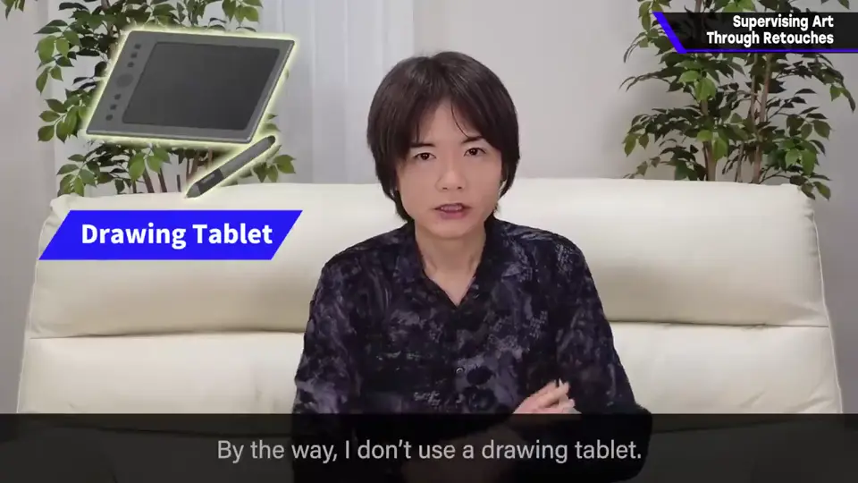
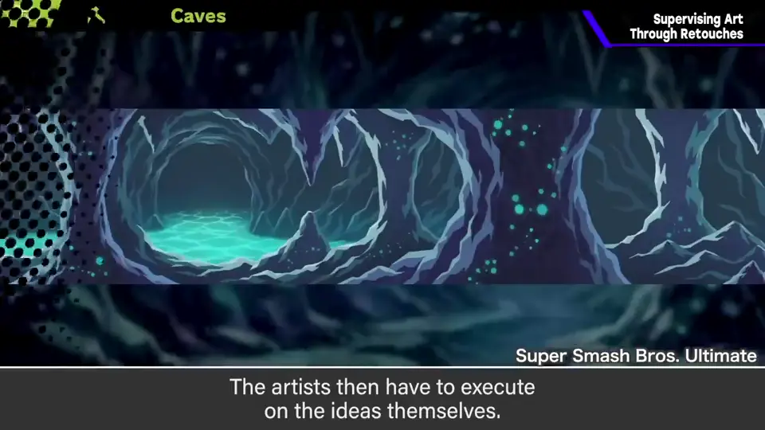
自测题
1. 为什么樱井用修图来做监修？
这种调整口头难传达；修图约 5～10 分钟就能做完，比口头说明有效。 1:30
2. 洞窟修图的步骤是什么？
读入 Photoshop，复制图层提高对比，错开色相，在受光处用橡皮擦，最后整理色调。 1:50
3. 灯火之星通路的熔岩为什么不做太耀眼？
因为伤眼。 1:10